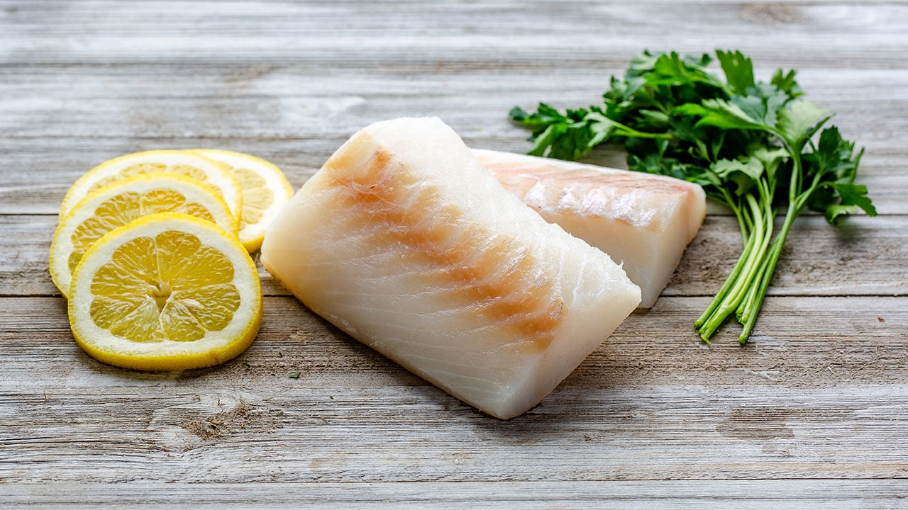

M@xgunn's Fish Emporiun is your trusted source for the freshest,
highestquality fish delivered straight to your door.
Whether you’re a home cook, chef,
or seafood enthusiast, we bring the ocean’s best right to your kitchen.
Our fish is sustainably sourced and handled with care, ensuring you always top-notch products.
At M@xgunn's Fish Emporiun, we are passionate about offering fresh, responsibly sourced
fish to our customers.
Our team works closely with local fishermen and suppliers to
ensure we provide a variety of the finest fish available.
We take pride in our
commitment to quality, sustainability, and supporting local communities.
From the
moment our fish is caught, we ensure it’s handled and delivered with the utmost care
to preserve its freshness and taste.

Salmon Fillets
Our premium salmon fillets are hand-cut and flash-frozen to lock in
freshness. Rich in omega-3 fatty acids and full of flavor, they are perfect
for grilling, baking, or making sushi at home. Sourced from the cleanest
waters, our salmon is a healthy, delicious choice for any meal.

Tuna Steaks
These thick, juicy tuna steaks are perfect for grilling, searing, or making a
fresh poke bowl. Packed with protein and a rich, meaty texture, our tuna is
caught sustainably and prepared to ensure optimal flavor and quality.

Cod Fish
Our tender, flaky cod fillets are a classic favorite for fish and chips, but
they’re also delicious baked, grilled, or pan-fried. Sourced from
sustainable fisheries, our cod offers a mild, light flavor that’s perfect for
any dish.
Why Choose Us?
Freshness Guaranteed
We prioritize freshness and quality in everything we offer. Each order is
carefully packaged and shipped directly to your doorstep to maintain the
fish’s peak freshness.
Sustainable Sourcing
We are committed to offering only sustainably caught fish, ensuring that
our oceans remain healthy and abundant for future generations.
Variety
From local favorites to exotic seafood options, our selection is wide and
diverse, ensuring you find the perfect fish for your needs.

“I ordered salmon for a family dinner, and it was the best we’ve ever had! The freshness really makes a difference.”Emma T
“Fantastic service and the tuna was perfect for my sushi night! Highly recommend this site for quality seafood.”Jason P